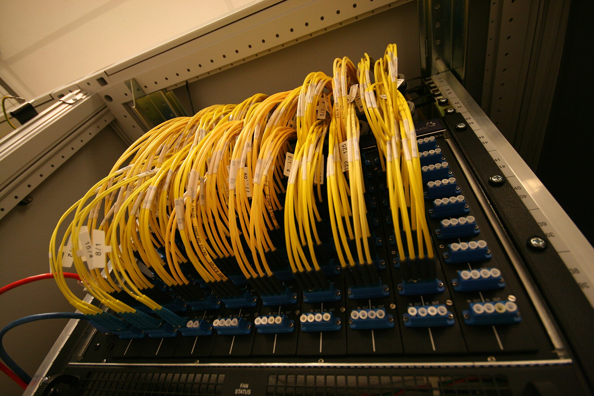

出口正常
正在读取活跃节点…
检测中
出口 IP未配置
端口未配置
协议Hysteria 2 · QUIC
延迟未测试
把节点链接粘进来
支持 v2rayN 分享链接、Base64 订阅内容、订阅 URL 与 sing-box JSON。一行一条，允许混合粘贴。
解析与校验都在后端完成。坏链接会逐条报错，不会覆盖当前可用节点。
节点
0 个节点编辑节点
保存活跃节点会重新校验配置并重启 sing-box。
连通性诊断
宿主机视角分段测试：DNS、直连、隧道与代理。
双通道分流
有线恒直连，无线按策略走隧道。白名单是唯一例外，规则由宿主机 dispatcher 执行。
有线流量不经过代理 · 无线策略 白名单例外
有线
恒直连不过隧道，不看策略。宿主机有线流量与虚拟机 eth0（工控 / 内网）全部直连。
无线
按策略宿主机 Wi-Fi 流量与虚拟机 eth1（日常互联网）走此通道，由策略与白名单共同决定。
可信 Wi-Fi
仅在「白名单例外」策略下生效。命中的 SSID 直接绕过隧道。
策略路由参数
通常无需修改。改动会重新下发 sing-box 配置并重启内核。
未知
sing-box 内核 · Hysteria 2 · QUIC
TProxy 劫持规则
未知
开启时非白名单流量走隧道
无线通道策略
未知
通道 B · 由策略与白名单决定
Wi-Fi 通道
未知
SSID 感知在宿主 dispatcher 侧
运维速查
在宿主机执行。排障时先看分流日志，再确认规则状态。
journalctl -f -t HY2_DISPATCH -t HY2_PROXY # 实时决策日志 /usr/local/bin/proxy-switch.sh status # 查看规则状态 sudo /usr/local/bin/proxy-switch.sh off # 一键恢复直连 curl -s http://127.0.0.1:8080/api/status # 后端健康快照

继续排查
节点握手失败时，先测延迟，再检查 SNI、混淆口令与端口跳跃范围。切换与编辑都在节点管理里完成。